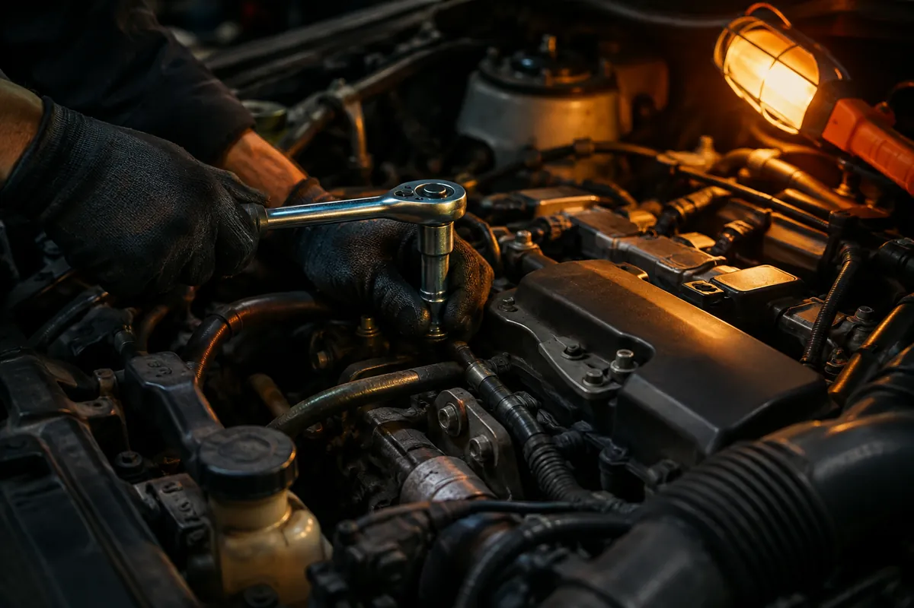

AI illustrationAll mechanical repairs
Engine, brakes, steering and suspension. If the car is making a new noise, showing a warning light or just doesn't feel right, bring it in.
- Warning lights on the dash
- Noises, leaks and smells
- Defect clearances